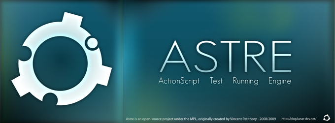

Overview of the Astre beta Components Reference.

This document provides a complete description of all the supported classes by Astre, as well as simple samples of code illustrating the use of each entity of Astre.
Astre is a unit test framework that enhances
the experience of the tester, by providing convenient features for
quickly writing efficient tests. Here is a non-exhaustive list of
the features of Astre :
- Asynchronous tests everywhere, including setUp() and tearDown() methods.
- Nested asynchronous tests.
- Advanced variants of asynchronous checkouts.
- Test lists sorting and filtering.
- Rich Assertion class, easily extensible using ICondition classes.
- Custom test progress listening.
- Built-in configurable live results' printer, plugable to any logging system.
- Unique "Test processor" system to run each test, whose behavior can be modified.
- Convenient type class helper, plugable to any logging system.
It also comes with an optional AIR application that best fits in a development team evironnement.
You will find more detailed informations on how to use the features of Astre on the official wiki.
 Vincent Petithory 2008-2009. All Rights Reserved.
Vincent Petithory 2008-2009. All Rights Reserved.